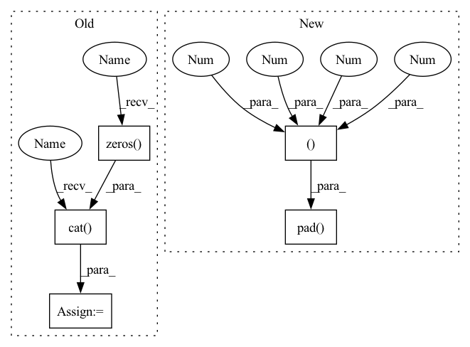

Pattern ID :3337

Before Change
def forward(self, x):
x = super().forward(x)
zeros = torch.zeros(x.shape[0], 1, *self.bf.shape[1:], device=self.weight.device)
//zeros = self.zeros.repeat(x.shape[0], 1, 1, 1)
x = torch.cat([x, zeros], dim=1)
x = x[:, self.idxs]
return x + self.bf[:, None, None].expand_as(x[0])
After Change
//zeros = torch.zeros(x.shape[0], 1, *self.bf.shape[1:], device=self.weight.device)
//zeros = self.zeros.repeat(x.shape[0], 1, 1, 1)
//x = torch.cat([x, zeros], dim=1)
x = torch.nn.functional.pad(x, (0,0,0,0,0,1))
x = x[:, self.idxs]
return x + self.bf[:, None, None].expand_as(x[0])
In pattern: SUPERPATTERN
Frequency: 3
Non-data size: 5
Instances
Fragment ID: 13029830
Project Name: eidoslab/simplify
Commit Name: f7223932c8dd7d39af815bbe7f2ce6c458aaf6f4
Time: 2021-07-01
Author: carlo.alberto.barbano@outlook.com
File Name: simplify/layers.py
M Class Name: BatchNormExpand
N Class Name: BatchNormExpand
M Method Name: forward(2)
N Method Name: forward(2)
M Parent Class: nn.BatchNorm2d
N Parent Class: nn.BatchNorm2d
M File Name: simplify/layers.py
N File Name: simplify/layers.py
M Start Line: 64
M End Line: 68
N Start Line: 64
N End Line: 69
'>
Before Change
def forward(self, x):
x = super().forward(x)
zeros = torch.zeros(x.shape[0], 1, *self.bf.shape[1:], device=self.weight.device)
//zeros = self.zeros.repeat(x.shape[0], 1, 1, 1)
x = torch.cat([x, zeros], dim=1)
x = x[:, self.idxs]
return x + self.bf[:, None, None].expand_as(x[0])
After Change
//zeros = torch.zeros(x.shape[0], 1, *self.bf.shape[1:], device=self.weight.device)
//zeros = self.zeros.repeat(x.shape[0], 1, 1, 1)
//x = torch.cat([x, zeros], dim=1)
x = torch.nn.functional.pad(x, (0,0,0,0,0,1))
x = x[:, self.idxs]
return x + self.bf[:, None, None].expand_as(x[0])
'>
Fragment ID: 13029831
Project Name: eidoslab/simplify
Commit Name: f7223932c8dd7d39af815bbe7f2ce6c458aaf6f4
Time: 2021-07-01
Author: carlo.alberto.barbano@outlook.com
File Name: simplify/layers.py
M Class Name: BatchNormExpand
N Class Name: BatchNormExpand
M Method Name: forward(2)
N Method Name: forward(2)
M Parent Class: nn.BatchNorm2d
N Parent Class: nn.BatchNorm2d
M File Name: simplify/layers.py
N File Name: simplify/layers.py
M Start Line: 64
M End Line: 68
N Start Line: 64
N End Line: 69
'>
Before Change
batch_size = ids.shape[0]
ids = ids.long()
pad = torch.zeros((batch_size, 1), dtype = torch.long)
ids_0 = torch.cat((ids, pad), dim = -1)
ids_1 = torch.cat((pad, ids), dim = -1)
if exists(segment_pos):
mask = (segment_pos == 0).long()
After Change
def get_bigram_ids(ids, vocab_size, segment_pos = None):
// ids are in shape (batch, seq, heads)
ids = ids.long()
ids_0 = F.pad(ids, (0, 0, 0, 1))
ids_1 = F.pad(ids, (0, 0, 1, 0))
if exists(segment_pos):
segment_pos = rearrange(segment_pos, "b n -> b n 1")
'>
Fragment ID: 13030017
Project Name: lucidrains/n-grammer-pytorch
Commit Name: 81f3a47759f5b0f34188308e3609af6806093d9c
Time: 2021-12-03
Author: lucidrains@gmail.com
File Name: n_grammer_pytorch/n_grammer_pytorch.py
M Class Name: AnonimousClass
N Class Name: AnonimousClass
M Method Name: get_bigram_ids(3)
N Method Name: get_bigram_ids(3)
M Parent Class:
N Parent Class:
M File Name: n_grammer_pytorch/n_grammer_pytorch.py
N File Name: n_grammer_pytorch/n_grammer_pytorch.py
M Start Line: 24
M End Line: 31
N Start Line: 25
N End Line: 30
'>
Before Change
x = super().forward(x)
//zeros = self.zeros.repeat(x.shape[0], 1, 1, 1)
zeros = torch.zeros(x.shape[0], 1, *self.bf.shape[1:], device=self.weight.device)
x = torch.cat([x, zeros], dim=1)
return x[:, self.idxs] + self.bf
def __repr__(self):
After Change
//zeros = self.zeros.repeat(x.shape[0], 1, 1, 1)
//zeros = torch.zeros(x.shape[0], 1, *self.bf.shape[1:], device=self.weight.device)
//x = torch.cat([x, zeros], dim=1)
x = torch.nn.functional.pad(x, (0,0,0,0,0,1))
return x[:, self.idxs] + self.bf
def __repr__(self):
return f"ConvExpand({self.in_channels}, {self.out_channels}, exp={len(self.idxs)})"
'>
Fragment ID: 13030095
Project Name: eidoslab/simplify
Commit Name: 68ab4bdd6c0acb399359f4ad18ca78029ccb8583
Time: 2021-07-01
Author: carlo.alberto.barbano@outlook.com
File Name: simplify/layers.py
M Class Name: ConvExpand
N Class Name: ConvExpand
M Method Name: forward(2)
N Method Name: forward(2)
M Parent Class: nn.Conv2d
N Parent Class: nn.Conv2d
M File Name: simplify/layers.py
N File Name: simplify/layers.py
M Start Line: 29
M End Line: 33
N Start Line: 29
N End Line: 34